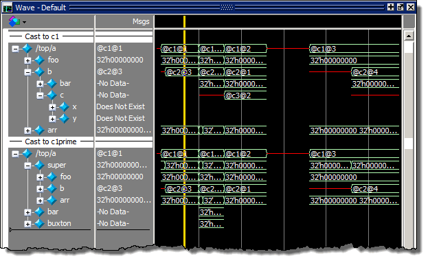
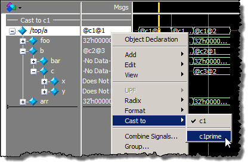

You can cast
a class variable to any of the class types that have been assigned
to that class variable. The default is the declared type of the
class variable.
Figure 1. /top/a Cast as c1 and c1prime 
Procedure
- Right-click (RMB) the class
variable waveform to display a popup menu and choose Cast
to.
- Right-click over the name/value
of the class reference in the Pathnames or the Values Pane of the
Wave window to open a popup menu.
- Choose .
The current value will have check mark next to it. (Figure 2)
Figure 2. Casting c1 to c1prime